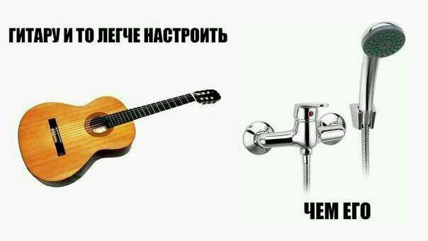
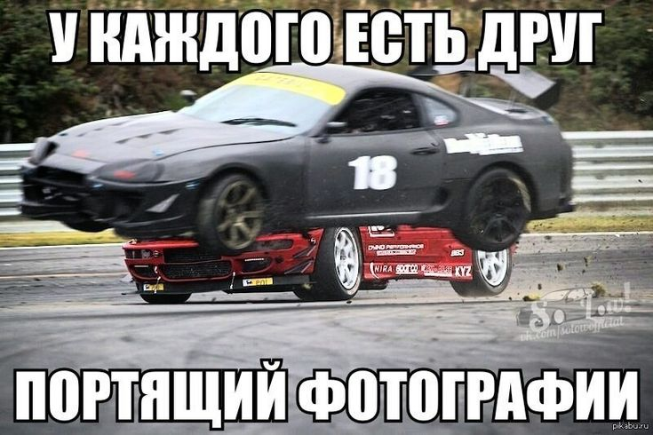

— Мам, мам! Я хочу вырасти и стать гитаристом!
— Сынок, ты уж выбери что-то одно.

— Мам, мам! Я хочу вырасти и стать гитаристом!
— Сынок, ты уж выбери что-то одно.

Проходит автопробег. Участвует несколько десятков автомобилей. Периодически колонна заезжает на АЗС, чтобы дозаправится.. только один экипаж никогда не заезжает на АЗС. Остальные участники начинают уже "шептаться": мол, что это у них за суперэкономичный двигатель, или бак неимоверного объема? На очередном перекуре не выдерживают и спрашивают у них:
— Мужики! Чего это мы всё время заезжаем заправляться, а вы нет?!
— Так мы же студенты! У нас денег нет!

Летит тяжелый транспортный самолет в сопровождении двух истребителей. Лететь долго, и пилотам истребителей стало скучно. Ну и начали они выебываться друг перед другом: мертвые петли крутят, виражи, восьмерки. И тут в радиоэфир вклинивается пилот транспортника:
— А спорим, я сейчас сделаю то, чего вы на своих истребителях никогда не сможете.
— Ты? На своем беременном Ил-76, собрался тягаться с нами, лучшими асами страны? Ну давай, удиви нас.
Прошло десять минут, транспортник как летел ровно, так и летит. Истребителям надоело ждать, и они вызывают пилота Ил-76:
— Ну и? Когда ты начнешь?
— Уже готово.
— И что же ты сделал того, что не можем мы?
— Сходил поссать и выпил кофе.

Описание: Культовое аниме, рассказывающее историю двух братьев — Эдварда и Альфонса Элриков. В попытке воскресить свою умершую мать с помощью запрещенной алхимии, они нарушают главный закон равноценного обмена. В результате Эдвард теряет руку и ногу, а Альфонс — всё тело, и его душа оказывается привязана к стальным доспехам. Чтобы вернуть свои тела, братья отправляются в долгое путешествие на поиски мифического Философского камня, попутно втягиваясь в масштабный политический и мистический заговор.
Это произведение не просто так занимает первые строчки в рейтингах аниме всех времен. «Стальной алхимик» подкупает тем, что это законченная, логичная и невероятно глубокая история. Здесь нет четкого деления на черное и белое: у злодеев есть своя мотивация, а герои совершают ошибки. Аниме поднимает тяжелые философские темы — ценность человеческой жизни, ужасы войны, религия и наука. При этом сериал отлично балансирует между драмой, качественным экшеном и добрым юмором. Однозначно шедевр, обязательный к просмотру.
Урок, доставшийся без боли, не имеет смысла. Ведь нельзя получить что-то, ничем не пожертвовав взамен. Но когда ты вытерпишь эту боль и преодолеешь её, ты обретешь сердце, которое невозможно сломить. Стальное сердце.Эдвард Элрик
Люди не могут двигаться вперед, если будут всё время оглядываться назад.Рой Мустанг
Ничто не совершенно. Этот мир не совершенен. Вот почему он так прекрасен.Рой Мустанг
*Включая Зимний кубок РПЛ и товарищеские матчи
| Дата | Время (МСК) | Соперник | Итоговый счет |
|---|---|---|---|
| 22.01.2026 | 17:30 | Шанхай Порт | 4 : 1 |
| 26.01.2026 | 11:00 | Шанхай Порт | 6 : 0 |
| 03.02.2026 | 15:00 | Динамо-Москва | 2 : 1 |
| 06.02.2026 | 19:15 | Краснодар | 0 : 3 |
| 10.02.2026 | 10:00 | ПФК ЦСКА | 2 : 2 |
| 27.02.2026 | 19:30 | Балтика | 1 : 0 |